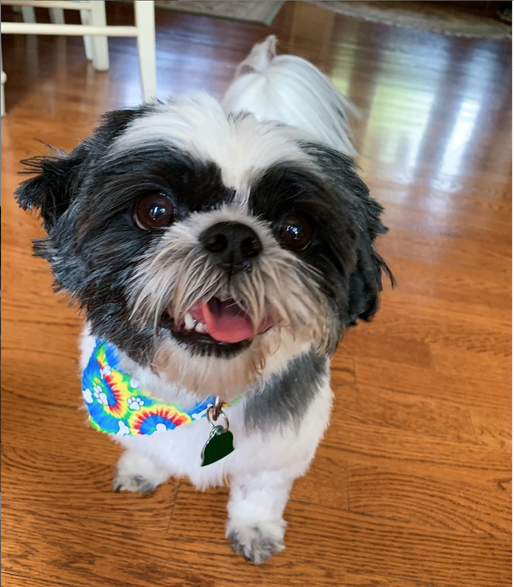
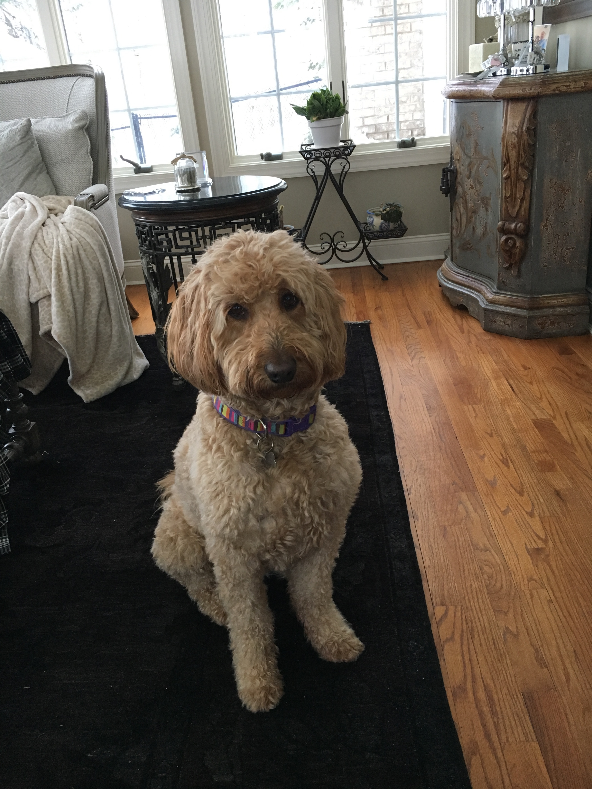

Purebreds are dogs with a documented pedigree.According to their website, the American Kennel Club, also known as AKC, "manages and registers purebred dogs" The AKC divides purebred dogs into seven categories. These seven categories are Sporting Group, Hound Group, Working Group, Terrior Group, Toy Group, Non-Sporting Group, Herding Group.
Wally is a purebred Shih Tzu. Shih Tzus are apart of the toy group. Image via Sabrina Venturini
Hybrid dogs are an intentional mix of two purebred dogs. The most popular hybrid dog is a Yorkipoo,the mix of a Yorkshire Terrior and a Poodle. Other popular hybrid dogs are Cockapoos and Buggs. My family chose to get a Golden Doodle because we like the temperment of Golden Retrievers but wanted a dog that would not shed. According to purebred.com, hybrid dogs have grown increasingly popular because owners know exaclty what they are getting.
Kori is a mix of a golden retriever and standard poddle. Image via Phoebe Brenner
Mutts are mixes of different breeds and cannot be identified as one breed. Mutts do not belond to one offically recognized breed. Most Americans believe that Purebreds are the most popular dog, but in fact Mutts are the most commonly own dog in the United States. Angela Hughes, veterinary genetics research manager at Mars Veterinary explains Mutt trends, “the DNA of America’s mixed-breed dogs tells a story of which breeds were popular in past decades. If a breed was trendy in the past, but has fallen from popularity, it may still represent a large portion of the current mixed-breed population.”

Nala is a shepard-boxer mix. Image via David Talley